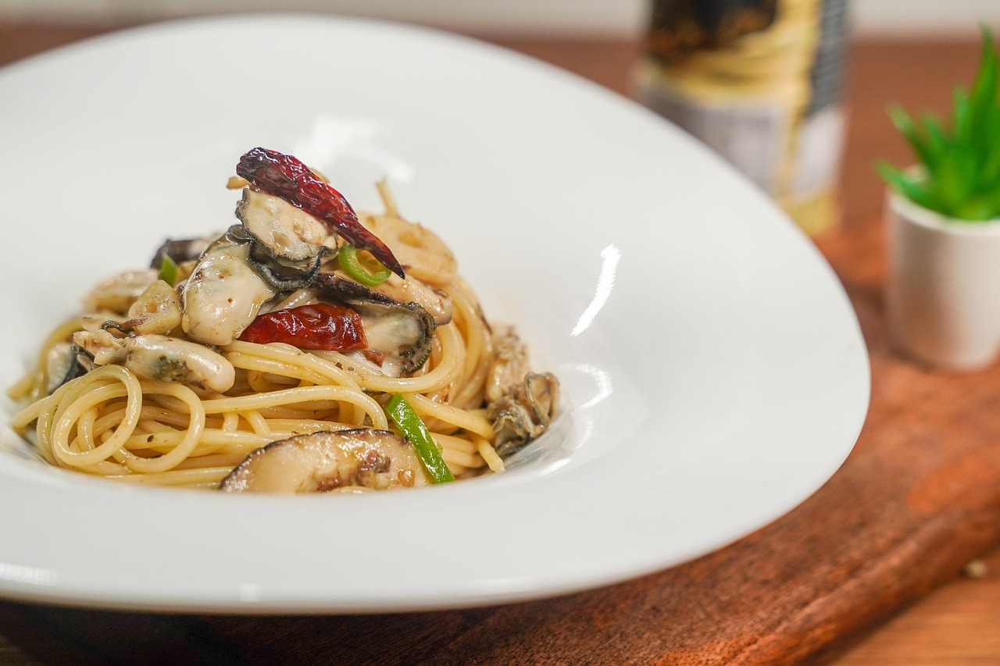

One-Pot Lemon Herb Pasta
(go back to homepage)

Description
This vibrant and effortless pasta dish is packed with fresh lemon flavor, aromatic herbs, and just the right touch of garlic and spice. Cooked all in one pot, it's a light and zesty entrée that's as refreshing as it is satisfying — ideal for starting off a well-balanced meal with minimal cleanup.
Ingredients
- 340g of spaghetti
- 4 cups of vegetable broth
- 1 lemon (zest & juice)
- 1 tbsp of olive oil
- 2 thinly sliced cloves of garlic
- 1 tsp of dried oregano
- 1/4 tsp of chili flakes (optional)
- salt and black pepper (to taste)
- 1/2 a cup of choppped parsley
Instructions
- Combine spaghetti, broth, lemon, olive oil, garlic, oregano, chili flakes, in a large pot.
- Bring to a boil over kmedium to high heat.
- Reduce heat and simmer uncovered; stir frequently.
- Cook until pasta is al dente and liquid has mostly absorbed (about 10-12 minutes).
- Stir in chopped parsley, adjust seasoning with salt and pepper, and serve warm.